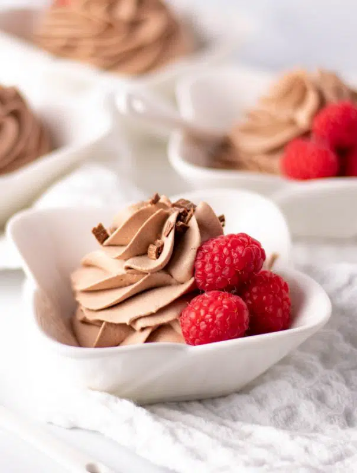

Easy Chocolate Mousse

Description
An airy, delicious chocolate mousse that whips up in less than 5 minutes.
With only 3 ingredients, this chocolate mousse recipe will be enjoyed by all chocolate dessert lovers!
Ingredients
- 1 1/2 cups HEAVY whipping cream
- 1/4 cup cocoa powder (dutch preferred), sifted,
use 1/3 cup for DARK chocolate flavor
- 1/2 cup powdered sugar,
use 1/4 cup for DARK chocolate flavor
- 1/4 teaspoon almond extract, optional
Directions
- In a chilled mixing bowl, begin whipping cream.
Whip until frothy and slightly thicken.
- Add powdered sugar and cocoa powder. Carefully mix until soft peaks form.
- Add almond extract if desired. Whip until stiff peaks form.
- Spoon into plastic bag or piping bag with piping tip. Pip into serving bowls or glasses.
- Enjoy immediately or refrigerate until ready to serve.